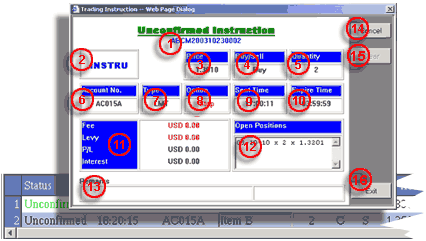

Working
orders list

-
Status - each instruction contained in the panel will bear either
one of the following status:
Unconfirmed - when an instruction is pending for confirmation from the Dealing Room, the order will show green colored Unconfirmed status in the Working Order List
Confirmed - when the Trading desk accepts an order for execution, the order will show a status of Confirmed. The confirmed order will stay in the Working Order List until the user signs out of the system
Cancelled - when an instruction is rejected for any reason, the instruction will return with a status of grey colored Cancelled. The panel contains all cancelled instruction during the online session until they are removed intentionally or when the user signs out.
- Time - depending on the status of the order, the time represents the date and time of order submission or confirmation
- Account - the trading account code
-
Item - the identification code of the trading item for the
instruction.
- Lot - trading quantity of the instruction
-
N/C - N for new order and C for close order
- B/S - B for buy and S for sell instruction
- Price - depending on the status of the order, the price represents the set price or the contracted price of the order
- Type - the instruction type
-
Fee -
-
Levy - the amount of levy or any other fee charged to the trading
account for the confirmed order.
Should user require more information about a contract or needs to perform the following operation:
- to cancel an unconfirmed Limit/Stop/MOO/MOC orders
- to remove cancelled orders from the list
|
 Unconfirm Instruction dialog |
- 1. Reference no. - It is the unique identification of the order
- 2. Item - the symbol of the trading instrument
- 3. Price - the target price of the order when it become confirmed
- 4. Buy/Sell - the buy/sell nature of the contract. Besides, when the contract is a selling contract, red color will dominate the Information dialog. When it is a buying order, blue will be taking place
- 5. Unit - the unit quantity of the contract
-
6. Account - the
account of the contract
- 7. Type - the order type of the instruction
- 8. Option - option for better or stop for a Limit order
- 9. Submit Time - the time when the order was submitted
- 10 Expire Time - the time when the order will be expired if remain unconfirmed
- 11 P/L & Fees - fees and charges of the orders if it is a confirmed order and all trading related gain/loss for a liquidation order
- 12 Open Positions - the date of execution, quantity and price of the corresponding open contract if the instruction is for liquidation purpose
- 13 Remarks - system message to describ various status of the instruction
- 14 Cancel - button to cancel an instruction if it is place for Limit/Stop/MOC/MOO and remain unconfirmed. Refer to cancel order
- 15 Clear - button to drop the instruction from the Working Order List if it is a cancelled instruction
- 14 Exit - user may click the button if he/she wants to close the Instruction dialog